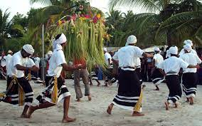

The culture of the Maldives is heavily influenced by the surrounding areas of India and Sri Lanka, as well as Arab traders who brought Islam to the archipelago in the 12th century. The predominant religion, Islam, shapes the cultural ethos and practices of the Maldivian people. Traditional music, dance, and crafts also display a synthesis of influences that include Indian, Sri Lankan, and Arab elements. The Dhivehi language, with its own script, is closely related to languages spoken in Sri Lanka and southern India.
